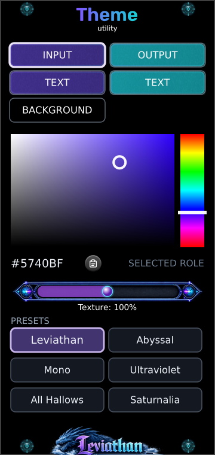

Input / Output
Top pair of buttons
Select the color role used by input or output areas. The highlighted outline shows the selected role. Selecting a button only chooses what to edit; the picker changes its color.
Leviathan for VCV Rack 2 · Open Source
One palette. A shared visual language.
Choose colors for input areas, output areas, their labels and panel backgrounds across theme-aware Leviathan modules. Adjust the glass texture or start from one of six factory palettes.

First theme
Panel breakdown
Select a numbered marker to reach its explanation.
Top pair of buttons
Select the color role used by input or output areas. The highlighted outline shows the selected role. Selecting a button only chooses what to edit; the picker changes its color.
Second pair of buttons
The left TEXT button edits labels assigned to input areas; the right edits output-area labels. Their colors are independent, so you can keep both sets readable over different fills.
Third row
Select the background color role. Changing or pasting this color enables it for supported panel backgrounds. It does not recolor Rack’s workspace or arbitrary artwork.
Large color square
Drag left for less saturation and right for more. Drag up for greater brightness and down toward black. The circular marker shows your current choice for the selected role.
Vertical rainbow strip
Drag up or down to select a hue. Then use the square to choose how vivid and bright it should be. A black or gray selection may need more brightness or saturation before a hue change becomes visible.
Below the picker
The readout shows the selected color as #RRGGBB. The clipboard icon pastes a color into the selected role; it is not a copy button. See accepted formats.
Horizontal slider
Adjusts the strength of supported fractal glass texture from 0–200%. The displayed percentage is the global setting, independent of which color role is selected.
Six buttons at the bottom
Click to apply the complete named palette, including text, background and texture. This replaces your current custom colors. Compare the six palettes below.
Shared color roles
Theme-aware panel elements are assigned roles. Editing a role updates the elements that use it across compatible modules, rather than painting one specific knob or panel. Each module decides which of its elements participate.
| Role | What it changes | What to look for |
|---|---|---|
| Input | Panel elements assigned the input color role. | A consistent color for input areas across modules. |
| Output | Panel elements assigned the output color role. | A distinct output color that makes connections easier to scan. |
| Text Input | Labels assigned to input areas. | Readable lettering against the chosen input fill. |
| Text Output | Labels assigned to output areas. | Readable lettering against the chosen output fill. |
| Background | Supported panel background layers. | A shared base color behind the functional areas. |
Some artwork, displays, meters and module-specific colors retain their own appearance. Theme does not replace every color on every module, and it does not theme unrelated plugins. The same RGB value can look different on a textured or shaded surface than in the flat picker.
Color editing
First select a role. Use the vertical strip for hue and the square for saturation and brightness. The left edge of the square is grayscale; the lower edge is black. If the hue strip appears to do nothing, move the square’s marker upward and to the right.
For an exact color, copy a supported value to the system clipboard, then click the clipboard button beside the hex readout. The color is applied to the selected role and saved immediately.
| Format | Example | Meaning |
|---|---|---|
| Six-digit hex | #5740BF or 5740BF | Two hexadecimal digits per RGB channel; letter case does not matter. |
| Short hex | #ABC or ABC | Expands to #AABBCC. |
| Decimal RGB | 87, 64, 191 | Three comma-separated integer channels, each from 0 to 255. |
Surrounding whitespace is accepted. CSS wrappers such as rgb(87,64,191), alpha channels and named colors are not supported. Invalid clipboard text leaves the current color unchanged and makes the paste button pulse red twice. The hex value is a readout rather than an editable text field.
Surface finish
Removes the supported fractal glass texture overlay. This can make color areas look simpler and less patterned. Other borders, shading or artwork can remain.
The reference texture strength, used by the Leviathan factory palette. It adds the normal patterned glass treatment to participating surfaces.
Increases the overlay’s opacity up to twice its base strength, subject to the renderer’s opacity limit. It makes the texture more prominent; it does not change the pattern’s scale.
Texture is shared across supported surfaces. Selecting INPUT, OUTPUT or a TEXT role does not give that role its own texture amount. Factory presets also set this value.
Factory palettes
Each button applies all five color roles and a texture amount. These flat swatches show the stored colors; the actual module rendering adds its own surface treatment. Both text roles share the listed text color in every factory palette.
The familiar purple input and cyan output pairing.
Input #5740BF · Output #1CCCD9
Text #FFFFFF · Background #000000
Texture: 100%
Deep blue inputs and rose outputs over a dark blue base.
Input #3F4C9A · Output #D6598E
Text #FFFFFF · Background #050A18
Texture: 133%
Light and dark gray roles with reduced texture.
Input #BABABA · Output #323232
Text #FFFFFF · Background #080808
Texture: 50%
Vivid violet and bright cyan on a purple-black base.
Input #A44DFF · Output #35D8FF
Text #FFFFFF · Background #10051C
Texture: 120%
Orange and purple with warm pale labels.
Input #F07818 · Output #7E3FC4
Text #FFF0D2 · Background #100B16
Texture: 125%
Red and green with warm gold-colored labels.
Input #B83248 · Output #248058
Text #FFE4A0 · Background #100D08
Texture: 110%
Scope & persistence
Multiple Theme modules edit the same palette. They do not create separate zones or compete by proximity: the most recent edit changes the shared state. A second editor reflects that state.
Color and texture drags publish changes during editing and save the final value when released. Paste and factory-preset clicks save immediately. There is no separate Apply or Save button.
Removing Theme does not restore the previous palette. Loading a patch does not recall a palette embedded in that patch. Theme is an editor for the saved visual preference, and compatible modules can use it without an editor present.
The settings file is Leviathan/theme.json inside Rack’s user folder. To back up a custom palette, keep a copy of that file. A patch file alone does not carry it to another computer; restore the settings file with Rack closed before starting that installation.
Compatible Leviathan Pro builds read the same settings file and can follow changes from Theme. Support depends on the installed module version and the panel elements it exposes to the theme system. Theme has no audio parameters, CV modulation or custom right-click editing menu.
Troubleshooting
Only elements assigned to Theme’s shared roles follow its palette. Artwork, special-purpose display colors and unsupported modules can remain unchanged. Check a known theme-aware panel area rather than expecting a full recolor.
Hue cannot visibly change black, and it has little visible effect at zero saturation. Move upward in the square to add brightness, then right to add saturation.
A factory preset replaces all roles and the texture setting. There is no custom-preset recall control on this panel. Back up the settings file before replacing a custom palette you want to keep.
Click the Leviathan factory button. It restores purple inputs, cyan outputs, white text, black backgrounds and 100% texture. Deleting or resetting the module is not the palette-reset workflow.
An edit changed the palette from its named preset. The active palette is now custom; selecting a factory button restores that preset and its highlight.
Copy a plain hex value or three decimal RGB integers. Remove wrappers, names or alpha values. A failed paste produces two red pulses and preserves the existing color.
The palette lives in Rack’s user settings rather than in the patch. The other installation uses its own saved theme and must also have compatible versions of the modules.
Reference
Checked against the local Leviathan-Rack2 Theme editor, service, presets, clipboard parser, persistence and fractal glass renderer, October 2026. The swatches show exact factory RGB values without simulating module lighting or texture.